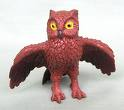

|
Laughable Moments |
|
Jonny Mon trying to
walk the log Friday night and falling in creek knee deep. |
|
Most Used Phrase |
|
I'm going to take a
s**t, be back in a minute. |
Other Phrases Overheard
"Life is not perfect. You will always
have fire ants."
"Fire Hot! Beer Cold! River Water... Real Cold!"
|
Most Improved Camper |
|
Taylor (who brought many pallets and remained stable enough to play cards). |
AWOL or DNF
No guilty campers this year.
*Pepper lasted until Sunday, but tore out early that
morning like a rat out of an aqua duct.
No Shows
John L. (2 consecutive years)
Tres (but does it really matter)
Campers on Probation
John L. (double secret probation)
Number of Guests
6
Officer of the Law Sightings
0
Latest non-human freak of nature sighting
An Owl with a wingspan of 4.3
feet
Most recent photos of this
feathered monster:


|
Special Thanks |
|
To all those who prepared the
campsite (wood delivery, pit digging, tarp erecting, etc.)
|
Future Changes Requested
Sunday prior to Camping Trip is now designated
as wood/pallet pickup and delivery day.
Attendance is mandatory and absence requires a written doctor's statement or
proof of out-of-town travel.
Summary
Fire was stoked, cards were played, hops was
consumed. A quorum was present for the annual meeting of the Board of
Directors.
A proposal was initiated by Devo to hold the 30th trip in Vegas.
All those in attendance were in favor of the motion.
Stories were told from years past. A good time was had by all.
The End.